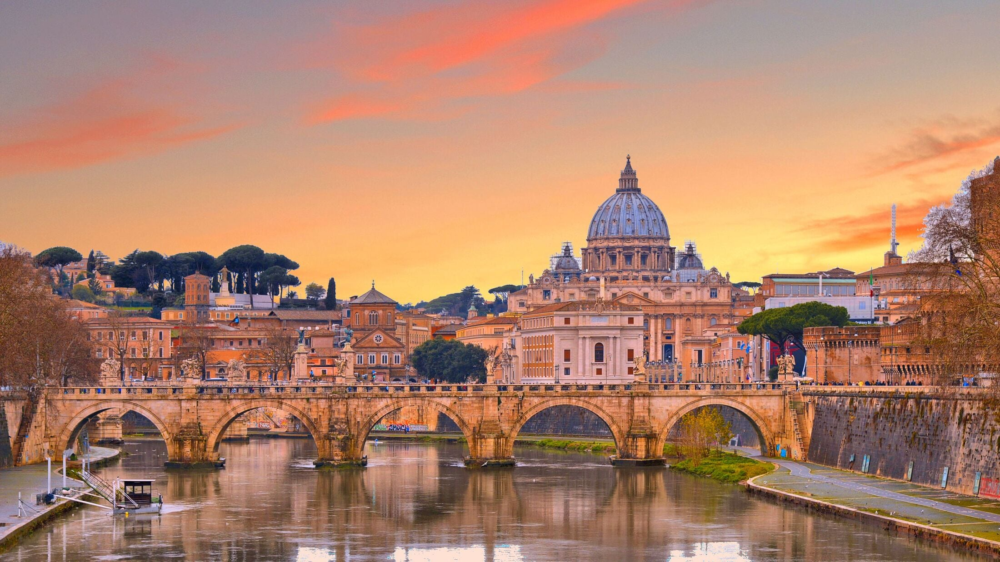
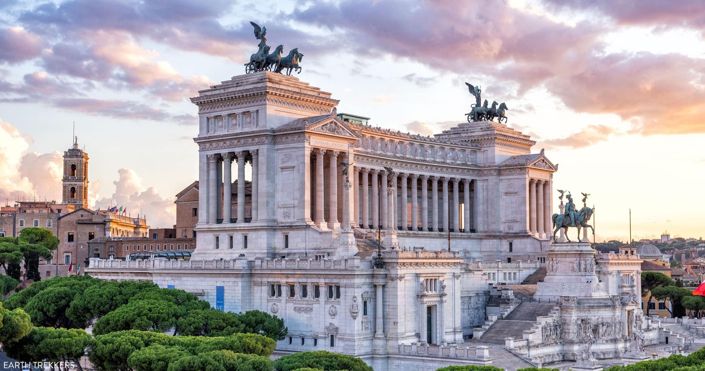
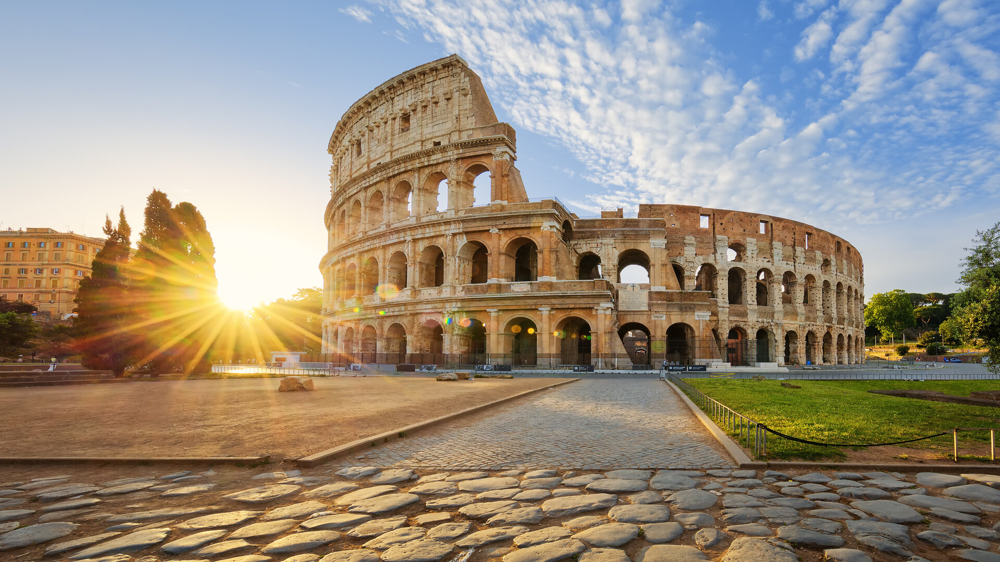
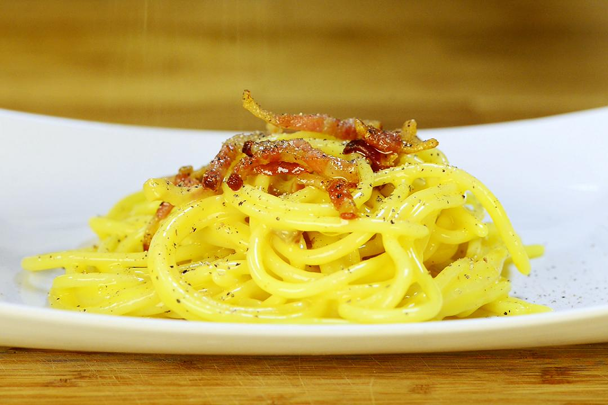
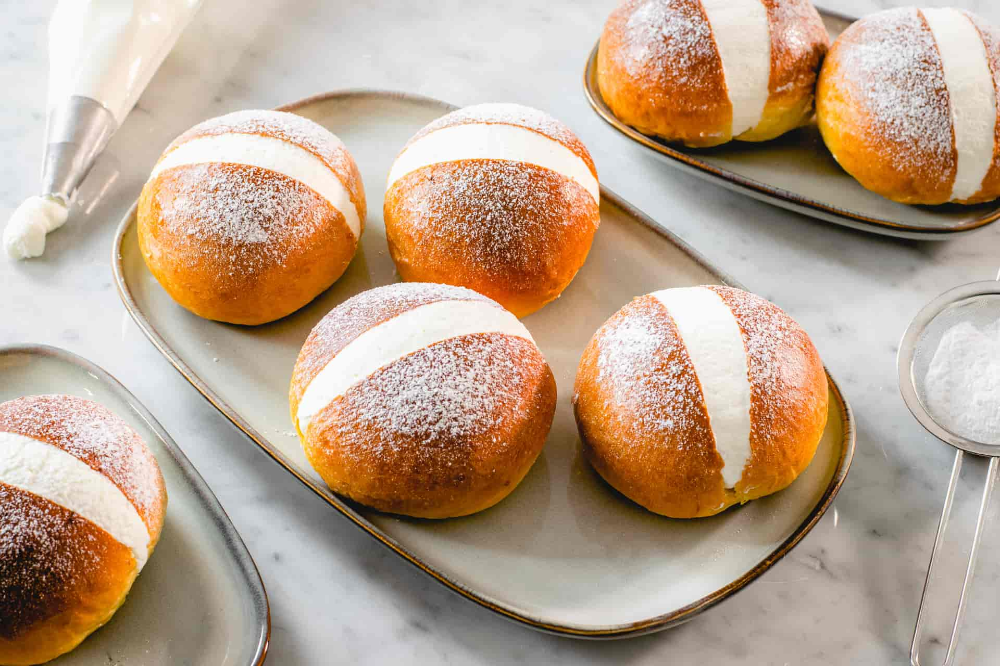
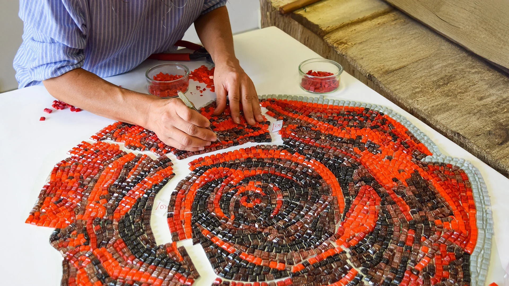
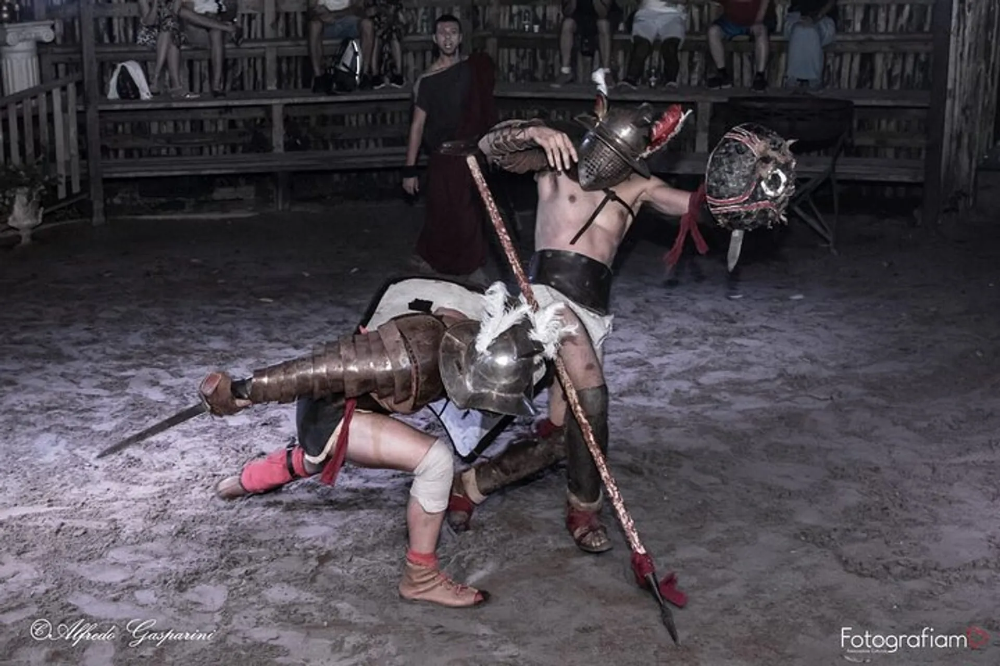

LANDMARKS

Vatican City is the smallest sovereign state in the world, both by area (about 44 hectares) and population (fewer than 1,000 residents). Located in the heart of Rome, it is an independent enclave ruled by the Pope. St. Peter’s Basilica, that you see in the picture, is the largest church in the world, built over the tomb of St. Peter the Apostle.

The Altare della Patria (Altar of the Fatherland), also known as the Vittoriano or the National Monument to Victor Emmanuel II, is one of Rome’s most imposing and symbolic landmarks, located between Piazza Venezia and the Capitoline Hill. Built to celebrate the Unification of Italy and the nation’s first king, Victor Emmanuel II. It serves as a powerful symbol of Italian liberty and unity.

The Colosseum, built between 72 and 80 AD, was ancient Rome's largest amphitheater, holding 70,000 spectators for gladiatorial combats and public games.After the fall of Rome, it was abandoned and used for centuries as a stone quarry to build churches and palaces. Today, it is a protected UNESCO World Heritage Site and one of the New Seven Wonders of the World.
CULINARY DELIGHTS

Carbonara is more than just a meal; it’s a culinary masterpiece born from simplicity and high-quality ingredients. It is the most famous and symbolic dish of Rome and the Lazio region, celebrated worldwide for its irresistible creaminess and bold, savory flavor. The magic lies in the technique. The egg-and-cheese mixture is added to the pasta off the heat, allowing the residual warmth to cook the eggs gently into a velvet sauce without scrambling them. One popular theory suggests it was created after World War II when Roman cooks combined local pasta with the bacon and powdered eggs from American military rations. Another legend traces the name to the carbonari (charcoal burners) of the Apennine mountains, who prepared this hearty, easy-to-store meal while working in the woods.

A soft, brioche-style bun sliced open and overflowing with clouds of freshly whipped cream. It is the quintessential Roman breakfast. The ancestor of the maritozzo dates back to Ancient Rome. It wasn't always the whipped-cream delight we know today; originally, it was a large, substantial loaf made of flour, eggs, oil, honey, and raisins. It served as a durable "energy bar" for laborers and shepherds who worked away from home all day and needed something sweet and filling to sustain them. During the Middle Ages, this pastry became the only exception to the strict fasting rules of Lent (Quaresima). In the 19th century, it became a tradition for young men to gift this sweet bun to their betrothed on the first Friday of March (the Valentine's Day of the era).
CULTURAL EXPERIENCES

Artistic mosaic is one of the most captivating and versatile forms of creative expression. With a history that goes back thousands of years, this technique has been used to decorate and enhance architectural spaces with a sense of enduring beauty.

An training session for a Roman gladiator was a highly disciplined, grueling process that took place in a specialized school called a Ludus. It was less about wild brawling and more about scientific athletic preparation. Under the eye of the Doctor (the trainer), they practiced striking specific vital points while maintaining a perfect defensive stance. They practiced how to position their bodies gracefully if they were defeated, showing "virtus" (courage) until the very last breath. Gladiators were nicknamed hordearii because they ate a diet rich in barley and legumes. This created a layer of subcutaneous fat that protected vital organs from superficial cuts. You can visit the ruins of the Ludus Magnus (The Great School) right next to the Colosseum. It features a miniature training arena where you can visualize these warriors practicing their deadly craft.